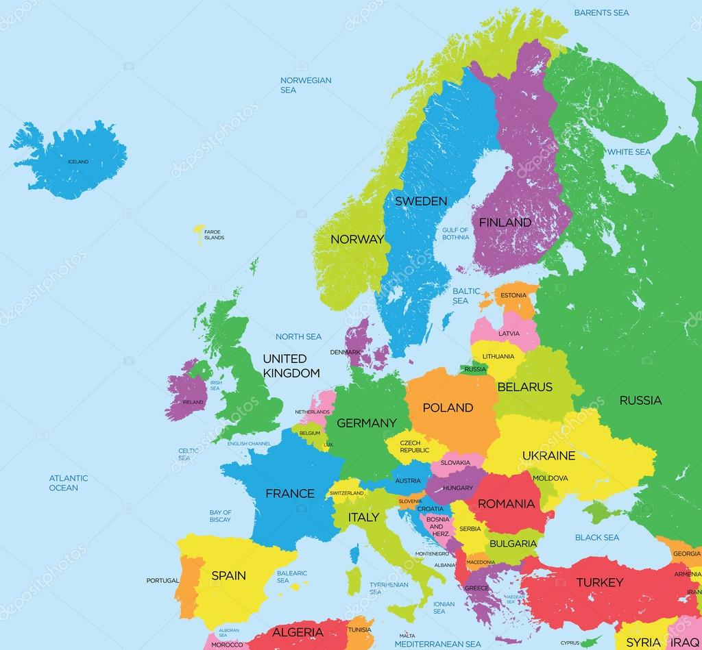

Zajęcia edukacyjne w europejskich szkołach kończą się zwykle między
ostatnimi dniami maja a drugą połową lipca.
Najczęściej uczniowie rozpoczynają wakacje w połowie czerwca.

Najkrótsze wakacje mają uczniowie niektórych landów niemieckich, Holandii, Anglii, Walii i Lichtensteinu, bo tylko 6 tygodni.
Najdłuższe wakacje mają uczniowie Albanii i Bułgarii, bo aż 15 tygodni.